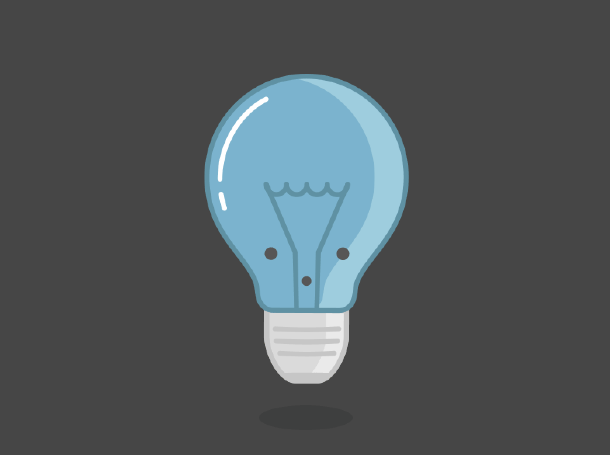

Alright guys! I hope you are all ready, because this is the moment we've been dreaming of all our lives. Even when our forefathers fought for the higher cause of freedom, they never would have thought that a day like this would come. Where we would not only fight for a nations freedom, for the freedom of all intergalactic lives. So now, lets get to how we're going to accomplish this. We will look at our top of the line strategy plans. I'm telling you we have the best strategists, that have played countless hours of age of empire.

Big Brain Strategy
What's answer for the quadratic equation u^2 -5u -14 = 0 ?

First, the Karens will distract the Guards. They will be separated into two battalions. The first battalion will
jam the communication line
between the Area 51 Guards and the US armed and air forces.
The second group will hide behind the Kyles. The Kyles will be equipped with Monster
Energy drinks. They should accumulate enough energy in the Area 51 Alien Centre before leaving.
Once at the perimeter, they will charge through the walls of the base, making an entrance for all the other troops.
The Kyles may be powered up by their monster energy drinks, but the area 51 guards are formidable opponents.
bitwise operation , zero fill right shift. right fill shift = pushing one or more zeroes bits from the left , and the right most bit falls down .
Converting from fahrenheit to Celsius:

We will need to send in the Rock Throwers to help distract the Guards with rocks to defend the Kyles.
We should stock up with about 5000 rocks before we head to the Area. Meanwhile, the Karens will serve as the second line of distraction, and will try to seduce the Guards with sexy looks.
After the Kyles open holes in the walls, the Naruto runners will engage the guards in melee after dodging and deflecting all their bullets
We will then divert a few rock throwers to throw enderpearls behind enemy lines to wreak havoc with enemy defences. For the penultimate wave, we will send in two armies of gunmen and a battalion of minecraft engineers who will man the TNT cannons. The armies will be equipped with Super Soakers and Nerf guns for maximum damage. One of the armies will surround Shane Dawson as he documents all the events that will happen and stream it live.
The other army will use the box of scooby snacks to summon our most powerful ally. Ultra Instinct Shaggy. Shaggy will use almost 1% of his power to utterly push back the guards and let us deeper into the facility. Once inside, we will have full access to the secrets contained in the base, but we must still remain wary for potential Guards.
Everyone will meet up at The Central Vault where we suspect the military has kept the top secret experiments and most importantly, aliens.
At this point the guard reinforcements should arrive. This is where it get's tricky, we're gonna need someone to perfectly play Giorno's theme on the piano we brought to give us the final push to escape.
Before the Raid, we will all assemble in the Area 51 Alien Centre on september 19th.
There, we will get equipped, rest up to tip-top condition.
The plan will be announced one more time before we leave to Area 51 at around September 19, 11 pm.
Then, the first group of Karens will be deployed at September 20, 3 am, each wave lasting around 1 hour.
We should get into Area 51 by 7, see everything we need to see, take everything we need to take, and leave by 9.
We will assemble at the Alien Centre at 12 pm, tally up the losses, getting paramedics on site to care for the wounded and
send the wounded to the nearest hospital to relax. There, we will have the final debrief and congratulations, and leave by 3 pm.
That's our plan, good luck and remember, they can't stop all of us.
"Happiness can be found even in the darkest of times if one only remembers to turn on the light."(ALBUS DUMBLEDORE, 1999)

Soundtrack Link